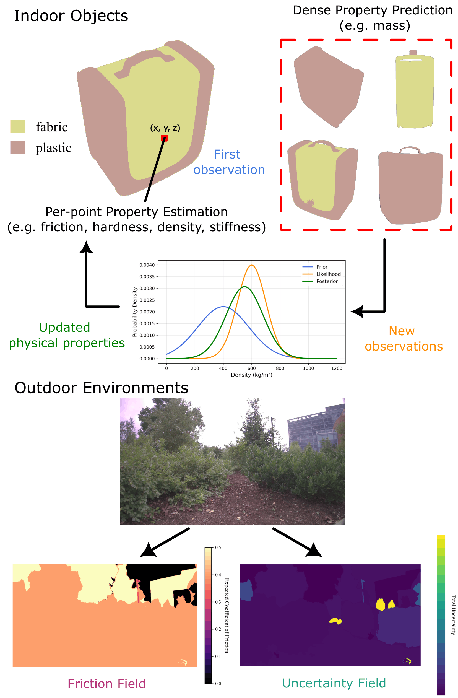

Understanding physical properties such as friction, stiffness, hardness, and material composition is essential for enabling robots to interact safely and effectively with their surroundings. However, existing 3D reconstruction methods focus on geometry and appearance and cannot infer these underlying physical properties. We present PhysGS, a Bayesian-inferred extension of 3D Gaussian Splatting that estimates dense, per-point physical properties from visual cues and vision-language priors.
We formulate property estimation as Bayesian inference over Gaussian splats, where material and property beliefs are iteratively refined as new observations arrive. PhysGS also models aleatoric and epistemic uncertainties, enabling uncertainty-aware object and scene interpretation.
Across object-scale (ABO-500), indoor, and outdoor real-world datasets, PhysGS improves accuracy of the mass estimation by up to 22.8%, reduces Shore hardness error by up to 61.2%, and lowers kinetic friction error by up to 18.1% compared to deterministic baselines. Our results demonstrate that PhysGS unifies 3D reconstruction, uncertainty modeling, and physical reasoning in a single, spatially continuous framework for dense physical property estimation.